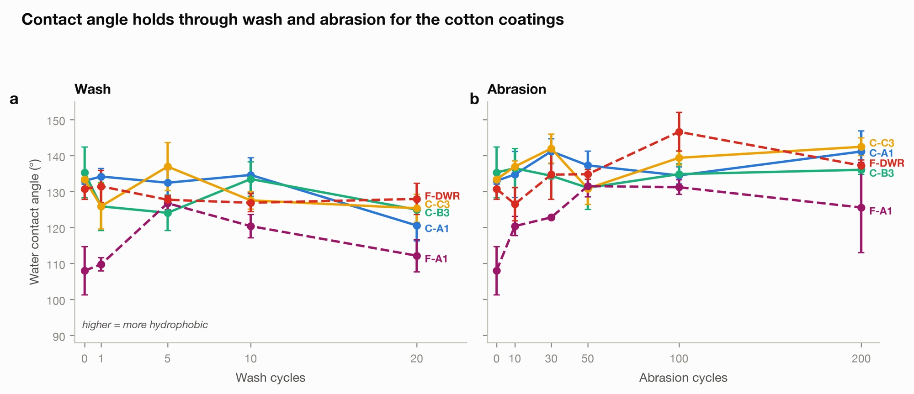

A PFAS free water repellent coating for cotton
My Master’s project, run with Finisterre. I made a fluorine free coating, put it on cotton, and measured it against Finisterre’s commercial finish through sandpaper abrasion and washing.
The findingStatic contact angle could not tell any of the coatings apart, or tell them from the commercial finish. Roll off angle could, and after 20 wash cycles it showed the commercial finish losing most of its shedding while the coatings on cotton ended close to where they began.
- Coating
- Stearyl acrylate, vinyl terminated PDMS and glycidyl methacrylate emulsion, crosslinked with a blocked isocyanate
- Variants
- Binder alone, plus 3 wt% bare anatase TiO₂, plus 3 wt% TiO₂ modified with vinyltrimethoxysilane
- Fabrics
- Plain woven cotton; Finisterre technical fabric, unfinished and with its factory finish
- Samples
- Three swatches per condition, cut from one coated batch per bath
- Instruments
- ATR-FTIR, XRF, SEM-EDX, TGA, goniometer, tilting stage
- Wear
- 200 sandpaper abrasion cycles; 20 wash cycles
- Contact angle on cotton
- 132 to 135°, against 132 ± 5° for the commercial finish on its own fabric
- Status
- Lab work finished July 2026, dissertation submitted
01The question
PFAS finishes are being regulated out of outdoor clothing. They repel water very well, but the same carbon fluorine bond that makes them work means they never break down. Fluorine free finishes exist, and on a fresh fabric many of them give a high contact angle. The complaint from industry is durability: they lose repellency faster under abrasion and washing, and cotton, which absorbs water and swells, is the hardest fabric to make them work on.
The project asked two things. Does adding silane modified titania to a fluorine free binder make it better on cotton? And how does the finish behave once it has been rubbed and washed, measured by how water actually leaves the fabric rather than by contact angle alone?
02My part
This was my MSc research project at UCL, supervised by Prospero Taroni-Junior, with Abbie Spence at Finisterre supplying the fabric and their commercial finish as the benchmark. I synthesised the binder emulsion, modified the titania, coated every sample, ran the characterisation and the wear testing, and did the analysis.
03Method
One binder, three pad baths, so that any difference between them comes from the particles and not from the chemistry or the process. The titania modification went through three iterations and the second was used. Swatches were dipped for 60 seconds, padded by hand and cured at 150°C for 3 minutes. Hand padding gave a wet pickup of 96 to 131%, well above the 70% I was aiming for, which matters later.
ATR-FTIR, XRF and SEM-EDX confirmed the binder and titania were on the fibres before anything was tested for performance. Static contact angle is the median over 2 to 10 seconds after the drop lands. Roll off angle is the tilt at which a drop starts to move, on a stage that goes to 90°.
Wear was two separate routes on separate coupons, measured on the same coupons at every stage, so each one is its own control:
- Abrasion: one cycle is a single 10 cm hand pass across 1000 grit paper under about 6.8 kPa, out to 200 cycles.
- Washing: one cycle is 10 minutes in a stirred detergent bath at 40°C, out to 20 cycles.
Neither is a textile standard, so the cycle counts compare within this study and not with others.
04Results
Contact angle put every coating level
On cotton the three baths gave 134 ± 2, 135 ± 10 and 132 ± 2° (mean ± SD, n = 3), statistically indistinguishable from each other. Finisterre’s commercial finish gave 132 ± 5° on its own fabric. The binder on that same unfinished fabric was lower, at 108 ± 10°. Uncoated cotton wets out, reading 38.8°, so the coating lifts it by roughly 95°.

Tilting the sample did not
With small drops, none of my coatings released a drop at any tilt up to 90°, on either fabric. The commercial finish shed eight of nine drops at 42 to 78°. Since the binder and the commercial finish shared the same Finisterre fabric, that difference is in the coating. A high static angle with complete pinning means large contact angle hysteresis: the back edge of the drop is catching on something.
With larger drops of approximately 32 mg, every coating released: 37 to 59° across my coatings, against 24° for the commercial finish. So the coatings are not absolutely pinned, and roll off depends heavily on drop size.
Washing and abrasion pulled in opposite directions
| Sample | Before wear | After 200 abrasion cycles | After 20 wash cycles | Wash trend per cycle |
|---|---|---|---|---|
| Cotton, binder only | 43.3 | 27.8 | 50.7 | +0.35 (p = 0.23) |
| Cotton, bare titania | 37.0 | 25.0 | 53.6 | +0.69 (p = 0.045) |
| Cotton, modified titania | 49.3 | 20.2 | 50.6 | +0.21 (p = 0.48) |
| Finisterre fabric, binder only | 59.0 | 27.4 | 78.7 † | +0.68 (p = 0.23) |
| Finisterre fabric, commercial finish | 24.4 | 31.1 | 77.8 † | +2.64 (p < 0.001, R² = 0.92) |
Washing is the result that stands. The commercial finish went from 24.4 to 77.8° over 20 wash cycles, the steadiest trend in the data, and one of its coupons stopped releasing altogether, so that figure understates the loss. The coatings on cotton ended 20 cycles close to their starting values, though the bare titania bath rose by half. This survives correction for multiple testing, and it runs against what regression to the mean would predict for a sample that started with the lowest angle, so noise cannot explain it.
Abrasion needs more care. Roll off fell on every one of my coatings as they were abraded, and on the one comparison that uses the same fabric, the gap to the commercial finish went from clear before wear (59.0 against 24.4°, p = 0.025) to indistinguishable after 200 cycles (27.4 against 31.1°, p = 0.743). But the samples that started worst improved most (r = 0.97), which is what noise alone produces against a floor near 13°. So I read it as abrasion closing the gap on matched fabric, not as the coating getting better, and I don’t claim a mechanism.

Contact angle missed almost all of it
Every sample stayed above 120° through both wear routes. Abrasion raised contact angle rather than lowering it, and washing took it down by 8.0 to 12.4° on the cotton coatings. Over the same samples roll off moved by 20 to 50° and reversed the ranking. A screen built on contact angle alone would have called every coating, the commercial one included, essentially unchanged.
Infrared on the worn coupons, ratioed against a band from the fabric itself so that contact pressure cancels, found the silicone markers on the cotton coatings at 100 to 124% of their starting level after both wear routes. The repellent chemistry was still there while the shedding changed.

05What did not work
The particle hypothesis was not supported. Under the microscope the silane modified titania was visibly better dispersed than the bare powder, which sat in large agglomerates. But no performance measure separated the two: not add on, not infrared, not contact angle, and not roll off before or after wear. At 3 wt% on this binder the particle treatment did not change performance. The one hint of a difference is that the modified particles seemed to lose less titanium in washing, but that rests on single EDX scans.


Small drops pinned on every lab coating. The best contact angles sit around 135°, so this is not superhydrophobic and I don’t claim it is. Four explanations fit the process record, none of them established: surfactant collecting at the film surface; too much coating, since the pickup ran about 30% over target and a thicker film buries the fibre texture that shedding needs; uneven emulsion quality; and the drop size sensitivity of the roll off test itself.
The static angle is behind the published version. The closest published system uses almost exactly the same chemistry and reports 161°. It was made with a high shear disperser, a pickup held to 70 to 80% and a 60 second cure at 170°C, so the gap looks like process maturity rather than chemistry. That paper didn’t test washing, which is where the clearest result here came from.
06Limits
- Three coupons per condition were cut from one coated batch per bath, cured in one run. They show variation within a batch, so for any comparison between baths the effective replication is one.
- The abrasion and wash methods are lab screens, not textile standards.
- One commercial benchmark, on one fabric. Three of the four comparisons with it cross fabrics, which is why the matched fabric result is the one quoted.
- Worn coupon EDX and infrared are single coupons per condition, so they only resolve large effects.
- The wear series ran over a fortnight without a time matched untreated control.
07What I would do next
- Measure add on, surface composition by XPS and roll off on the same coupons before and after a short abrasion series. That separates removing mass, removing surfactant and changing texture, and would turn the abrasion observation into a mechanism or rule it out.
- Fix the drop volume and record the tilt ramp, and add a spray test to ISO 4920, so the shedding numbers can be compared with published work.
- Close the process gap in one batch: high shear emulsification, pickup held to 70 to 80% on a lab padder, and a 60 second cure at 170°C.
- Replicate the worn coupon EDX and infrared to confirm or dismiss the titanium retention hint.
The broader point I’d take into any coatings work: rank fluorine free candidates on how the drop leaves the surface, and on washing, not on static contact angle and abrasion alone. Static angle would have passed every coating here.